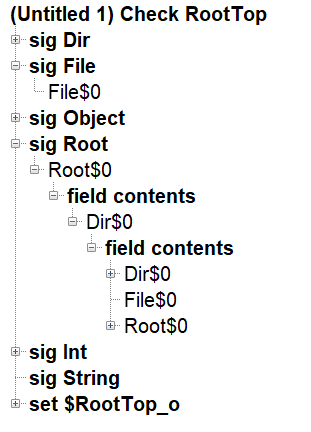
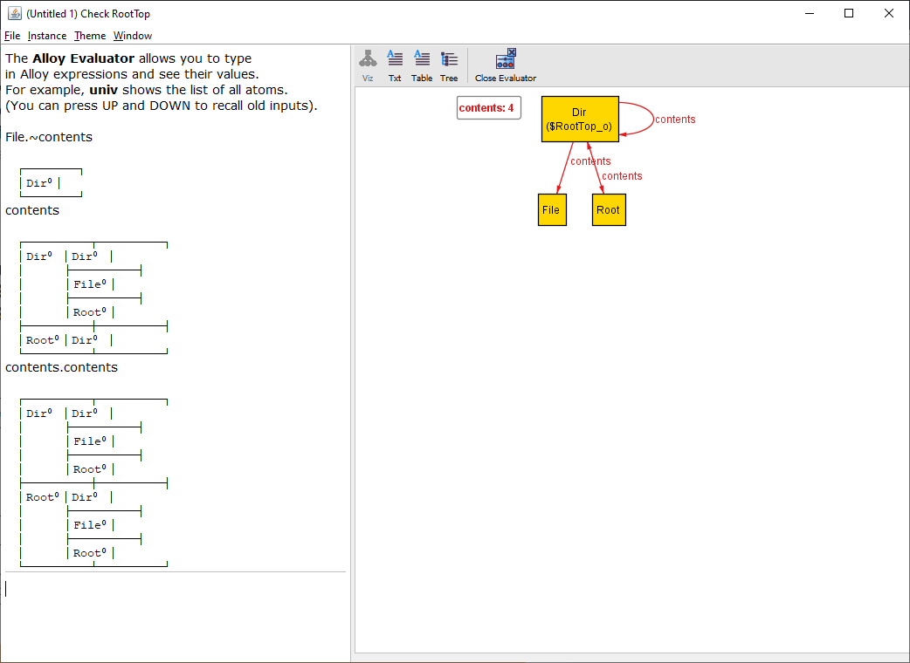

Visualizer¶
Given the following model
abstract sig Object {}
sig File extends Object {}
sig Dir extends Object {contents: set Object}
one sig Root extends Dir { }
fact {
Object in Root.*contents
}
assert RootTop {
no o: Object | Root in o.contents
}
check RootTop // This assertion should produce a counterexample
- ::
- fact “demo” {
- let unroot = Dir - Root |
contents = Root -> unroot + unroot -> Dir + ((Dir - Root) -> File)
}
One counterexample to RootTop is a directory that contains the root. In the Visualizer, this looks like
This page will cover all functionality of the visualizer.
Attention
The XML for this example can be downloaded here.
Tip
The model visualizer names atoms like Atom$0, Atom$1, etc. This can sometimes be hard to follow in the visualizer. To give things qualified names, instead write:
abstract sig Base {
-- relations here
}
lone A, B, C, D extends Base {}
run {} for 2 Base
This will guarantee the values have better names.
Output options¶
The standard view is the visualizer. The other three options are
Text
seq/Int={0, 1, 2, 3} String={} none={} this/Object={Dir$0, File$0, Root$0} this/Dir={Dir$0, Root$0} this/Dir<:contents={Dir$0->Dir$0, Dir$0->File$0, Dir$0->Root$0, Root$0->Dir$0} this/Root={Root$0} this/File={File$0} skolem $RootTop_o={Dir$0}
Tree
Table
┌────────┬────────┐ │this/Dir│contents│ ├────────┼────────┤ │Dir⁰ │Dir⁰ │ │ ├────────┤ │ │File⁰ │ │ ├────────┤ │ │Root⁰ │ ├────────┼────────┤ │Root⁰ │Dir⁰ │ └────────┴────────┘ ┌───────────┬────┬─────┬─────┐⁻¹ │this/Object│Dir⁰│File⁰│Root⁰│ └───────────┴────┴─────┴─────┘
Warning
The table view shows the atoms in a human readable form, for example, writing Root⁰ instead of Root$0. In the evaluator, however, you need to write Root$0.
Magic Layout¶
Automatically generates an appropriate theme for the visualization.
Evaluator¶
The evaluator can be used to run arbitrary commands against the existing model. It cannot create new signatures, only investigate the current signatures and relations you currently have. You cannot define a new functions or predicates in the evaluator, only evaluate Expressions.
Note
While the evaluator can evaluate most expressions, it does not have the full capacity of the alloy analyzer. For example, polymorphic domain restriction will not work. Additionally, integer overflow will wrap instead of raise an error.
Projection¶
Projections break a complex model into multiple subviews. Instead of showing relations from the projected signature, each relation will be represented as a text label on the corresponding targets of the relation.
Todo
The current example of the visualizer doesn’t have projections, find a better example.